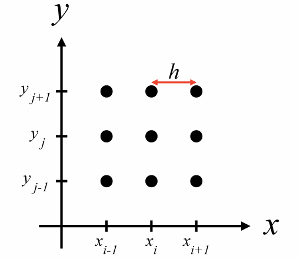
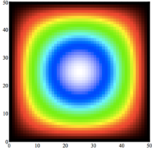

<!DOCTYPE html>
<html lang="en">
  <head>
    <title>this.data</title>
    <link rel="stylesheet" href="assets/css/style.css">
    <link rel="stylesheet" href="assets/css/font.css">
    <link rel="stylesheet" href="//maxcdn.bootstrapcdn.com/font-awesome/4.2.0/css/font-awesome.min.css">
    <link rel="stylesheet" href="//cdnjs.cloudflare.com/ajax/libs/highlight.js/8.4/styles/github.min.css">
  </head>
</html>
<body>
  <div id="side-bar">
    <div id="header">
      <div id="title">this.data</div>
      <div id="author">
        <div id="name">Flávio Sousa</div>
        <div id="social-media"><a href="//pt.linkedin.com/pub/flávio-sousa/3a/a06/770/" target="_blank"><i class="fa fa-linkedin"></i></a><a href="//twitter.com/fjmarujo" target="_blank"><i class="fa fa-twitter"></i></a><a href="//github.com/fjsousa" target="_blank"><i class="fa fa-github"></i></a></div>
      </div>
    </div>
    <div id="menu"><br>
    </div>
    <div id="about">
      <p id="about-title">About: </p>
      <p>
        this.data is a blog about numbers, modelling 
        and coding in general
      </p>
    </div>
  </div>
  <div id="container">
    <div id="content"><h1 id="webrtc-parallel-processing-part-1-">WebRTC Parallel Processing (part 1)</h1>
<p>I did a little experiment with WebRTC and a CFD (Computational Fluid Dynamics) solver I wrote.
I wanted to see what could be done with webRTC and browser parallel computing. First, I needed a problem that was 
computationally intense and suitable to parallelization. CFD suited that class of problems and plus, coming from
mechanical engineering, it was a type of problems I was decently familiar with.   </p>
<p>CFD is a class of numerical methods to solve differential equations from fluid flow problems. We want to solve 
a given set of equation to compute several fields like flow velocity, temperature and other physical properties.</p>
<p>The methods used in this type of numerical analysis are iterative, meaning that you&#39;ll have to compute several solutions, each one 
function of and closer to the final solution than the previous. When you use parallel computing techniques, you end up with a 
lot of communications between nodes at each iteration. This way, the communication speed quickly becomes the bottleneck in the process.  </p>
<p>In this first post, I&#39;ll write about the solver itself.  In a second posts, I&#39;ll write about how I used WebRtC to distribute 
the computation across several browsers. In a third post, I&#39;ll write about performance considerations.</p>
<h2 id="the-poisson-equation">The Poisson Equation</h2>
<p>The equation I&#39;m solving is in the form of </p>

      <div lang="latex" class="equation">\left(\frac{\partial ^2}{\partial x^2} + \frac{\partial ^2}{\partial y^2} \right) U(x,y) = b</div><p>this equation describes aspects of physical behaviour in, for instance, heat transfer and fluid flow. Fluid flow problems 
are based in the Navier Stokes equation and solving the poisson equation makes up a large amount of the computing time.</p>
<p>In the equation above, the term <em>U(x,y)</em> represents the field we are interested in computing. Usually there&#39;s no 
analytical solution to get <em>U</em>, hence the need to use numerical methods. However
if we want to test the solver, we can replace <em>U</em> by a known function. </p>
<p>Considering a rectangular domain of witdth <em>w</em> and height <em>h</em>, 
we have for instance:</p>

      <div lang="latex" class="equation">U(x,y) = cos \left( \pi \left( \frac{1}{2} - \frac{x}{w} \right) \right) sin \left( \pi \frac{y}{h} \right) </div><p>The field <em>U</em> plotted in <em>x</em>, <em>y</em> looks something like this:</p>
<p></p>
<p>Replacing the first equation with this <em>U</em> function we get:</p>

      <div lang="latex" class="equation">
        \left(\frac{\partial ^2}{\partial x^2} + \frac{\partial ^2}{\partial y^2} \right) U(x,y) = 
        U(x,y) \left( -\frac{\pi^2}{h^2} - \frac{\pi^2}{w^2}  \right).
      </div><p>Now we have a poisson equation with a known analytical solution.</p>
<h2 id="numerical-model">Numerical Model</h2>
<p>The next step is to discretize the equation with a first order central finite difference scheme
and obtain an algebraic formula for <em>U</em> that we can code. 
I won&#39;t enter in details about the deduction because this is an extensive topic but you can 
find many<a href="http://www.ece.utah.edu/~ece6340/LECTURES/Feb1/Nagel%202012%20-%20Solving%20the%20Generalized%20Poisson%20Equation%20using%20FDM.pdf">references</a> in the internet </p>
<p>Basically, the idea is to approximate the derivative in an array of points in the domain of the solution. The points are equally spread 
in <em>x</em> and <em>y</em> like in the image bellow</p>
<p></p>
<p>In the image, <em>h</em> is the distance between this points. In the x and y direction, this distance will be called <em>Δx</em> and <em>Δy</em>, respectively.</p>

      <div lang="latex" class="equation">u'_{i,j} = - \frac{1}{-2/\Delta x^2 -2/ \Delta y^2} \left( \frac{u_{i,j-1} + u_{i,j+1}}{\Delta x^2} + \frac{u_{i+1,j} + u_{i-1,j} } {\Delta y^2} - U(x_j,y_i) \left( -\frac{\pi^2}{h^2} - \frac{\pi^2}{w^2}  \right) \right).</div><p>We start with all points set to zero and compute the <em>u</em> for every point. We then repeat the process, but ussing the new values. 
We repreat the process until there is no significant difference between the new values and the old ones.</p>
<h2 id="javascript-implementation">Javascript Implementation</h2>
<p>I implemented the solver in node which enabled me to test everithing first in my local machine. In CFD it&#39;s important to test 
if the numerical method is being solved correctly, otherwise know as verification, and if the solution compares well with the 
equations, also know as validations. I achieved this with a small test suit that checks priceisely this two steps.</p>
<p>It&#39;s better now to jump to the implementations and I show you how to use it. You can find the implementation of the solver 
on a<a href="//github.com/fjsousa/poisson-solver">github repository</a>. To install it just run </p>
<pre><code>  npm install fjsousa/poisson-solver
</code></pre><p>Here&#39;s how to require and instantiate the solver:</p>
<pre><code class="lang-Javascript">  var Poisson = require(&#39;poisson-solver&#39;);

  //Set conditions
  var conditions = {
    w: 1,     
    h: 1,     
    n: 50,    
    m: 50     
  };

  //Initialize solver
  var poisson = new Poisson(conditions);
</code></pre>
<p>Here, <code>w</code> and <code>h</code>are the width and height of the domain. In this case, we are choosing an unitary measuremnet. And <code>n</code> and <code>m</code> are
the number of cells in the 2 dimentions. I was a but lazy here and only tested for situations when n = m. </p>
<p>Now we need to set boundary condtions. Acoording to our analitical solution, the edges of the domain are zero, so we&#39;ll create 
4 arrays with zero elements, for the north, south, east and west boundaries:</p>
<pre><code class="lang-Javascript">  var N = [];
  var S = [];
  var E = [];
  var W = [];

  for (var i = 0; i &lt; conditions.n; i++) {
    N[i] = S[i] = E[i] = W[i] = 0;
  }

  //Set Dirichlet boundary conditions to zero
  poisson.setBoundaryConditions(N, S, E, W);
</code></pre>
<p>Now we are ready to start the solver. We call the method poisson.solver and just have to define the maximum number of iterations and the final 
residue. </p>
<pre><code class="lang-Javascript">  var maxItterations = 100000000;
  var maxResidue = 1E-9 ; 

  var output = poisson.solver( maxItterations, maxResidue);
  console.log(&#39;Solver converged with&#39;, output.iterations, &#39;iterations and&#39;, output.residue, &#39;residue.&#39;);
</code></pre>
<h2 id="visualization">Visualization</h2>
<p>Now we have the numarical solution and we can visualize it using the print method, </p>
<pre><code class="lang-Javascript">  //Print solution
  poisson.print(&#39;./field.txt&#39;, poisson.u.old);
</code></pre>
<p></p>
<p>In the next post, I&#39;ll show you how I developed from here and distributed this solver among several browsers tabs.</p>

      <div id="disqus_thread">    
        <script type="text/javascript">
          /* * * CONFIGURATION VARIABLES: EDIT BEFORE PASTING INTO YOUR WEBPAGE * * */
          var disqus_shortname = 'this-data'; // required: replace example with your forum shortname
          
          /* * * DON'T EDIT BELOW THIS LINE * * */
          (function() {
              var dsq = document.createElement('script'); dsq.type = 'text/javascript'; dsq.async = true;
              dsq.src = '//' + disqus_shortname + '.disqus.com/embed.js';
              (document.getElementsByTagName('head')[0] || document.getElementsByTagName('body')[0]).appendChild(dsq);
          })();
        </script>    
        <noscript>Please enable JavaScript to view the <a href="https://disqus.com/?ref_noscript">comments powered by Disqus.  	</a></noscript>
      </div>
    </div>
  </div>
  <div id="footer"></div>
  <script>
    (function(i,s,o,g,r,a,m){i['GoogleAnalyticsObject']=r;i[r]=i[r]||function(){
      (i[r].q=i[r].q||[]).push(arguments)},i[r].l=1*new Date();a=s.createElement(o),
      m=s.getElementsByTagName(o)[0];a.async=1;a.src=g;m.parentNode.insertBefore(a,m)
      })(window,document,'script','//www.google-analytics.com/analytics.js','ga');
      ga('create', 'UA-53583095-1', 'auto');
      ga('send', 'pageview');
    
  </script>
  <script type="text/javascript" src="http://latex.codecogs.com/latexit.js"></script>
  <script type="text/javascript" src="//cdnjs.cloudflare.com/ajax/libs/highlight.js/8.4/highlight.min.js"></script>
  <script>hljs.initHighlightingOnLoad();</script>
</body>